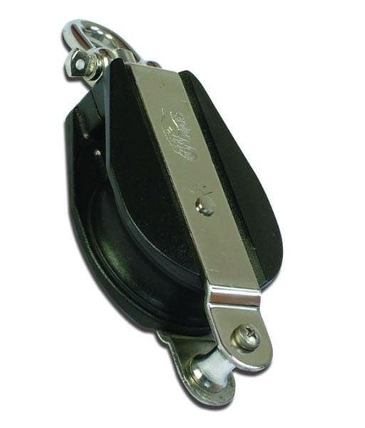

- Tekne Malzemeleri
- Deniz Motorları
- Makine Parçaları
- Deniz Araçları
- Elektronik

Tamamen ısıya, sürtünmeye ve kırılmaya karşı etkili.
Plastik ve krom malzemeden imal edilmiştir.
Tip : TK-10 10mm
Minimum Çalışma Yükü : 280 kg
Maksimum Çalışma Yükü : 950 Kg
Kategori : 10 mm Makara
Orjinal Fiyat :
636
TL
Havale : 10 mm Makara
Satın alınacak adet
1
Son fiyat:
636
TL